Virial Equilibrium
The next 3 hours will be only about virial equilibrium, I'll be taking over the next two talk slots...Ringberg ISM 2021
Cluster formation and fragmentation (CMF, IMF)
- Postdoc: Allison Towner
- PhD: Desmond Jeff, Theo Richardson, Alyssa Bulatek, Nazar Budaiev
- REU: Justin Otter, Danielle Bovie, Josh Machado, Sydney Petz
- Undergrad: Madeline Hall, Michael Fero, Derod Deal, Parker Ormonde, Aden Dawson, Helen Radomski, Brice Tingle, Oketa Basha, Morgan Himes
Slides available at https://keflavich.github.io/talks/RingbergISM2021.html
Questions addressed with ALMA long-baseline data:
- How dense are forming clusters? (stellar density)
- Dense enough to form high-mass stars by collisions?
- Possible approach: ALMA-LB observations
- How massive are YSOs?
- Luminosity, dust-mass estimates are really bad
- Possible approach: Dynamical mass measurements. Salt disks? Masers?
- Do HMYSOs get their mass through disks?
- We see disks, but mostly they have little mass compared to the stars
- Competitive accretion? Inertial inflow? Collisions?
How dense are cluster-forming regions?
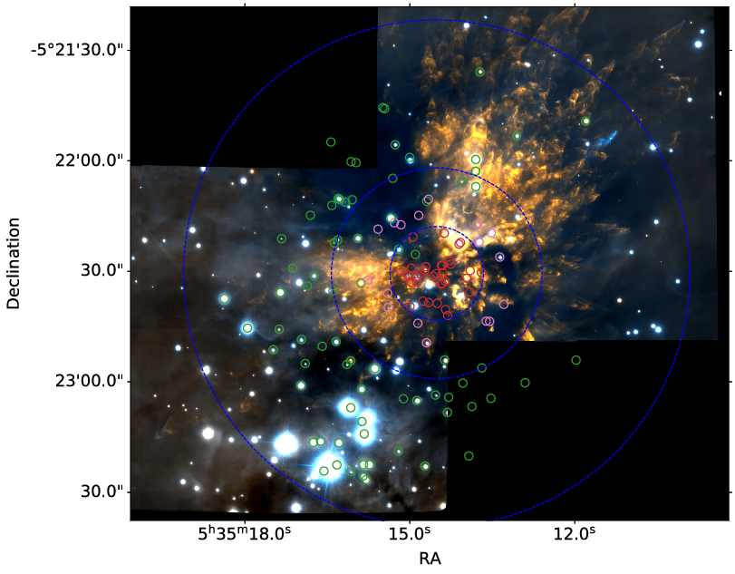
OMC1 is denser than the ONC

N*OMC(Otter+ 2021) = 1.6 x 105 pc-3
N*ONC(Otter+ 2021) = 0.6 x 105 pc-3
N*ONC(Hillenbrand+ 1998) = 0.2 x 105 pc-3
Many new disks in the OMC

Otter+, resubmitted
FOV: 0.07 pc (16000 AU)
72 YSOs
One "hot core"
FOV: 0.07 pc (16000 AU)
72 YSOs
One "hot core"
Disk Gallery
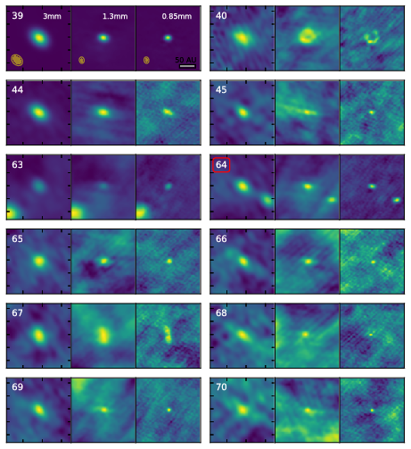
Salts in Orion
Orion Source I
a disk around a 15 M⊙ YSO
Salt: NaCl
Temperature?
Temperature?
A contrived model
Observing the Keplerian rotation profile of a disk is the most direct way to measure a protostar's mass
(we can only see the disk, not the star itself)
We can use salts to measure HMYSO masses
- NaCl, KCl are only in the disk, not the outflow (water traces both)
- NaCl is detected in at least two other HMYSOs
(Tanaka+ 2020, Maud+ in prep)
- Salts are observable with ALMA, the JVLA, and the future ngVLA
- Future projects will involve observing and modeling salt disks to measure HMYSO masses
W51 e2e: Too optically thick at 1mm to measure disk
CS v=0 J=1-0 and v=0 J=2-1 masers may trace the disk?

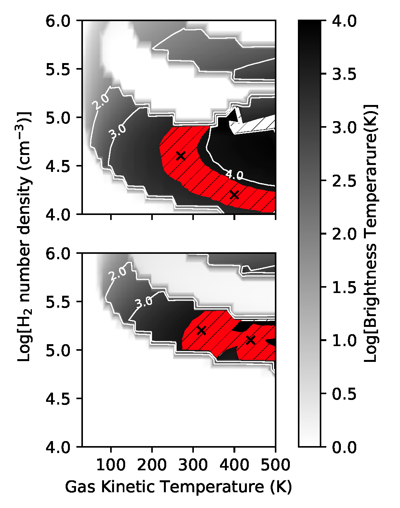
CS maser conditions
van der Walt+ 2020- Top: CS J=1-0, Bottom: CS J=2-1
- Red: Consistent w/W51e2e observations
- Masers do not coexist; require different specific CS column
(N2-1=1015.6, N1-01016.1 cm-2) - Require high abundance (XCS > 10-5)
- Hot (300-500 K), moderate-density (n~105 cm-3): Disk surface? Or outflow cavity wall?

 Nazar Budaiev: Low-mass YSOs in Sgr B2N
Nazar Budaiev: Low-mass YSOs in Sgr B2N
- Massive cores are split
- Fragmentation?
 Nazar Budaiev: Low-mass YSOs in Sgr B2M
Nazar Budaiev: Low-mass YSOs in Sgr B2M
- Massive cores are split
- Fragmentation?
Zooming in: W51-IRS2

Zooming in: W51-IRS2

Zooming in: W51-IRS2

(How) does the core mass function (CMF) map to the stellar initial mass function (IMF)?
(How) does the core mass function (CMF) map to the stellar initial mass function (IMF)?
(How) does the core mass function (CMF) map to the stellar initial mass function (IMF)?
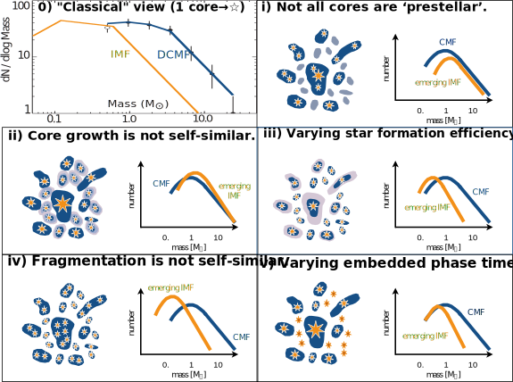
ALMA-IMF Initial Results
- Data Paper:
- High dynamic range images
- Careful treatment of continuum
- Millimeter spectral index maps
- Hundreds of cores measured in multiple cloud evolutionary stages
- Uniform beam and sensitivity
- First samples to include massive (M>10) cores
- Evolution of the CMF with region age
- High dynamic range images
- Careful treatment of continuum
- Millimeter spectral index maps
- Uniform beam and sensitivity
- First samples to include massive (M>10) cores
ALMA-IMF Data Soon
- Continuum data paper submitted (Ginsburg+, with big data reduction
team: Roberto Galvan-Madrid, Nichol Cunningham, Timea Csengeri,
Patricio Sanhueza, Fernando Olguin, Thomas Nony, Jordan Molet, Ana
Lopez, Yohan Pouteau, Andrez Guzman, Manuel Fernandez, Melisse
Bonfand)
- Self-calibration (10-500% dynamic range improvement)
- Mosaicing
- Continuum selection
- Method comparison
- Survey overview paper submitted (Motte+)
- Sample selection (evolutionary stages), highlights
- Catalog paper in prep (Louvet+)
- ~1000 cores cataloged
- Self-calibration (10-500% dynamic range improvement)
- Mosaicing
- Continuum selection
- Method comparison
- Sample selection (evolutionary stages), highlights
- ~1000 cores cataloged
ALMA-IMF data highlights


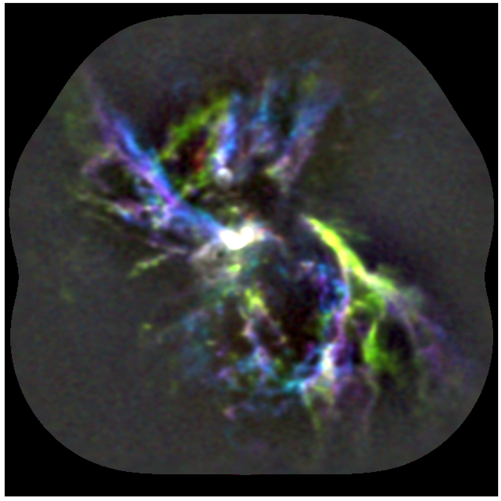


Measurements of the CMF
The CMF does not appear to be universalRecent ALMA CMF measurements:
- Lu+ 2020: CMZ, α = 1.04±0.08
(α20kms = 1.07±0.11, αSB1o = 0.83±0.21, αSgrC = 1.00±0.13)
- Sanhueza+ 2019 IRDCs, α = 1.07±0.09
(αpre* = 1.17±0.10, αgetsf ≃ 1.35)
- Yu+ 2018 α ≃ 1.24 ± 0.17
- Liu+ 2018 α ≃ 0.86 ± 0.11
- O'Neill+ 2021 α ≃ 0.94 ± 0.08
- Motte+ 2018 α ≃ 0.90 ± 0.06
Heterogeneous source extraction, opacity & temperature assumption
ALMA-IMF Early Results:
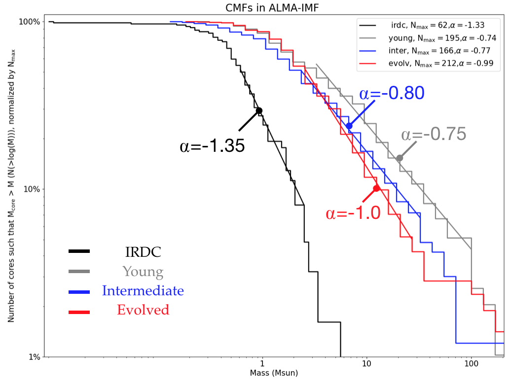

G010.62 
G012.80 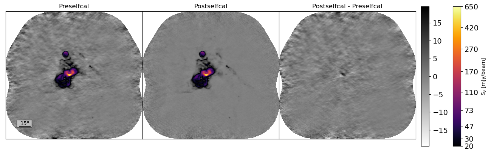
G327.29 
G328.25 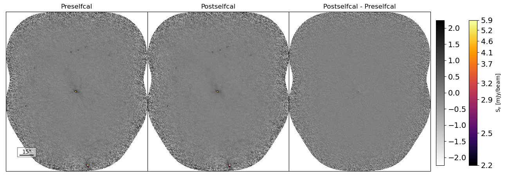
G333.60 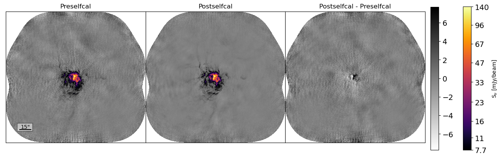
G337.92 
G338.93 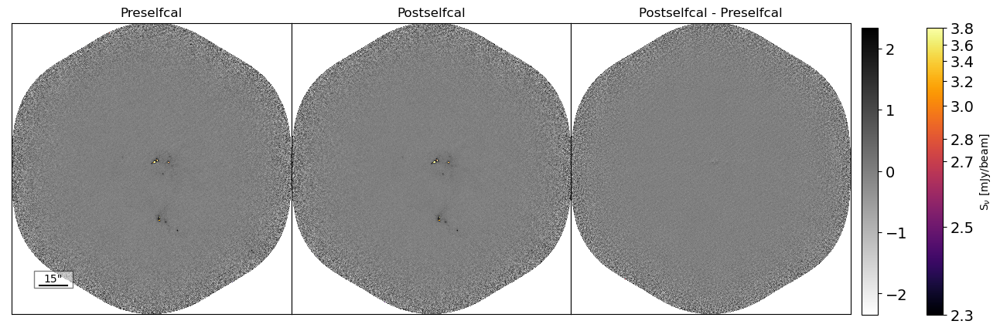
G351.77 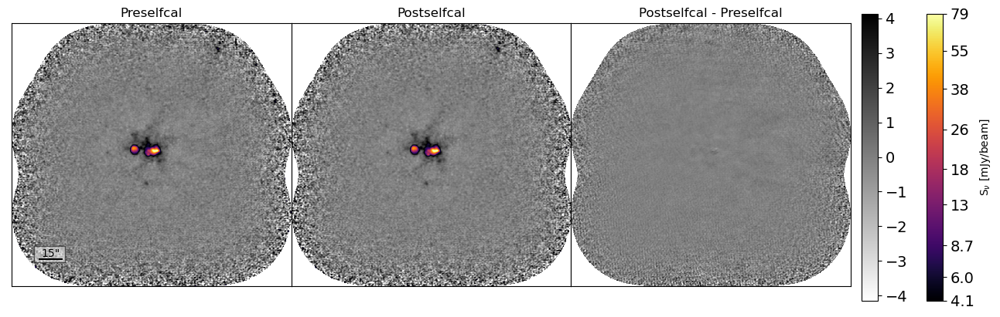
G353.41 
W43-MM1 
W43-MM2 
W43-MM3 
W51-E 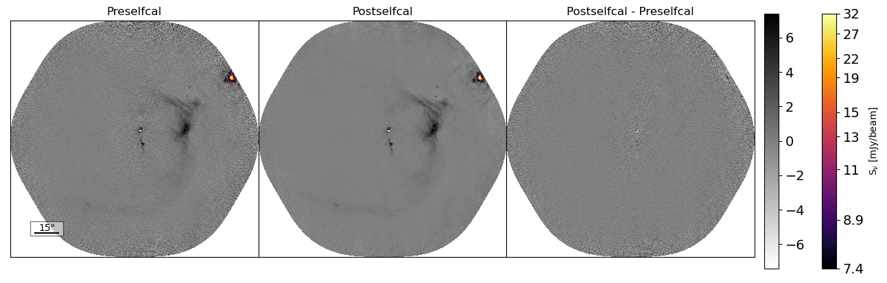
W51-IRS2
G010.62 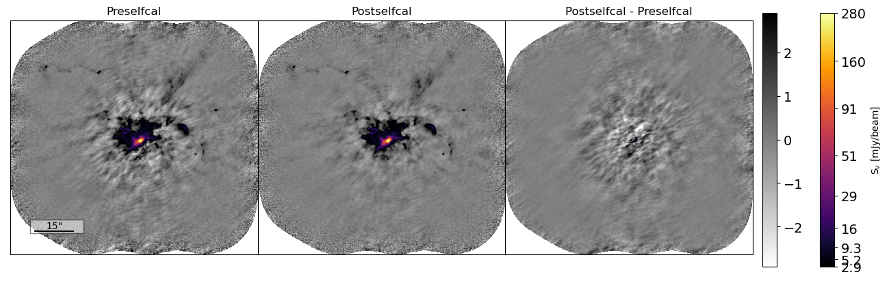
G012.80 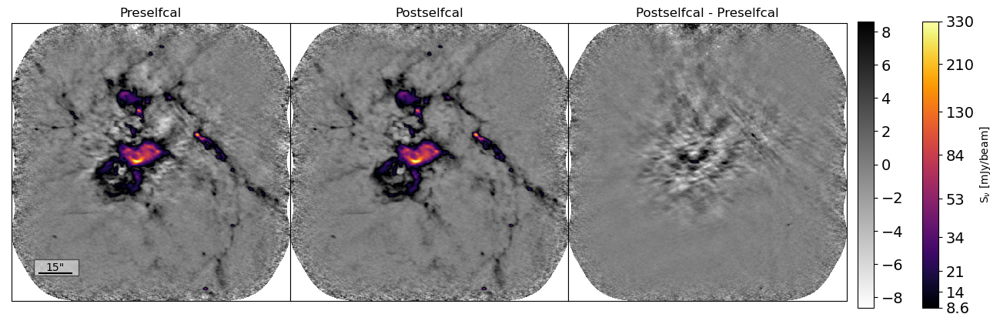
G327.29 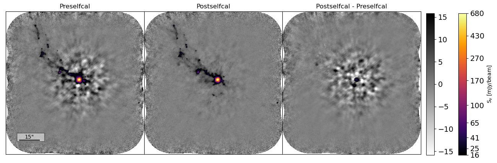
G328.25 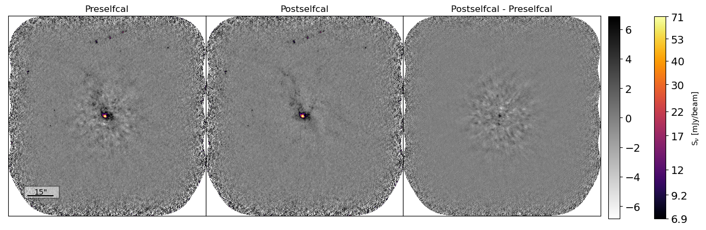
G333.60 
G337.92 
G338.93 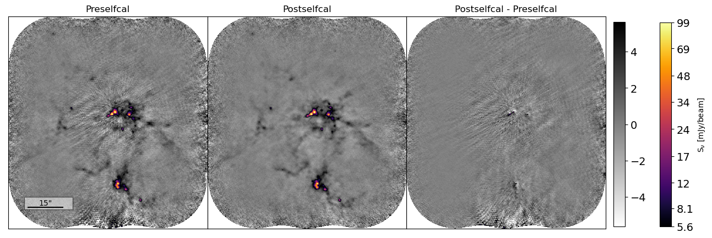
G351.77 
G353.41 
W43-MM1 
W43-MM2 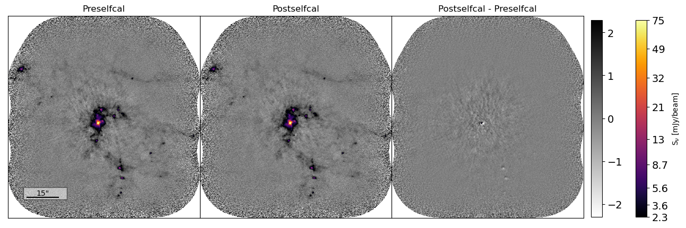
W43-MM3
W51-E 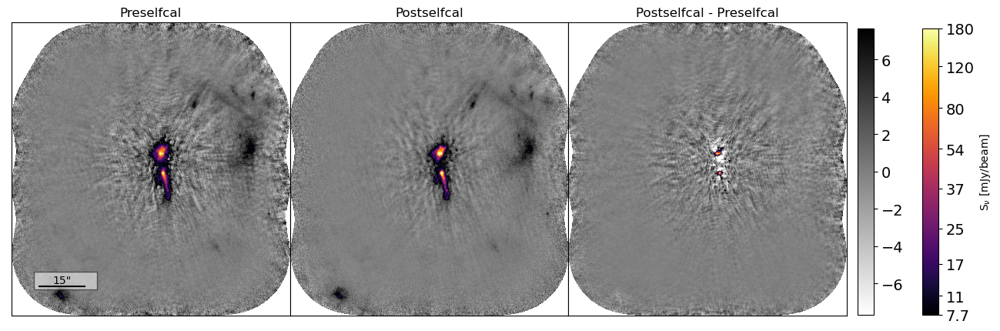
W51-IRS2

G010.62

G012.80

G327.29

G328.25

G333.60
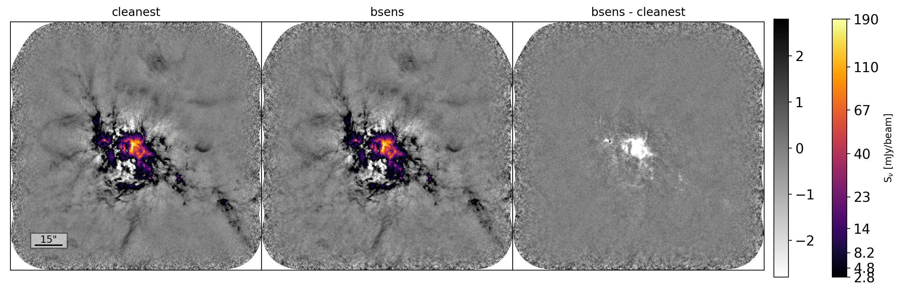
G337.92

G338.93
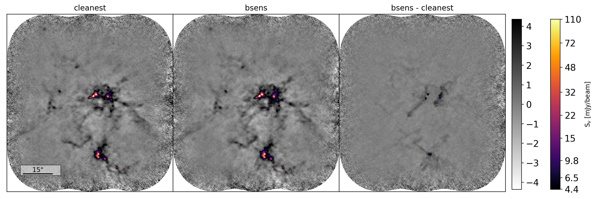
G351.77
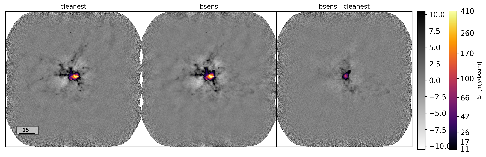
G353.41

W43-MM2

W43-MM2

W43-MM3
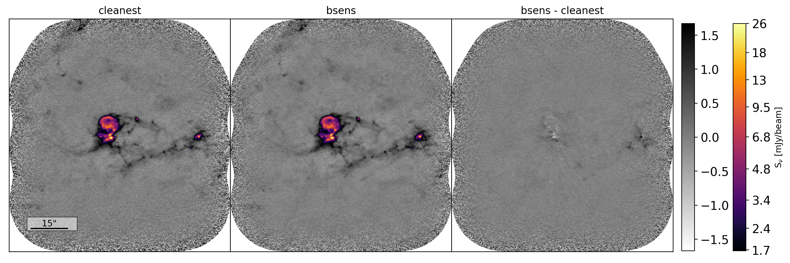
W51-E

W51-IRS2

BSENS - Cleanest: G333 B6

BSENS - Cleanest: W51-IRS2 B3

On the Rayleigh-Jeans tail:


Fraction of area filled with free-free emission is a coarse tracer of evolutionary stage

ALMA-IMF Initial Results
Robust Comparisons: G008.67 B3

Robust Comparisons: G008.67 B6

Robust Comparisons: G010.62 B3

Robust Comparisons: G010.62 B6

Robust Comparisons: G012.80 B3

Robust Comparisons: G012.80 B6

Robust Comparisons: G327.29 B3

Robust Comparisons: G327.29 B6

Robust Comparisons: G328.25 B3

Robust Comparisons: G328.25 B6

Robust Comparisons: G333.60 B3

Robust Comparisons: G333.60 B6

Robust Comparisons: G337.92 B3

Robust Comparisons: G337.92 B6

Robust Comparisons: G338.93 B3

Robust Comparisons: G338.93 B6

Robust Comparisons: G351.77 B3

Robust Comparisons: G351.77 B6

Robust Comparisons: G353.41 B3

Robust Comparisons: G353.41 B6

Robust Comparisons: W43-MM1 B3

Robust Comparisons: W43-MM2 B3

Robust Comparisons: W43-MM2 B6

Robust Comparisons: W43-MM3 B3

Robust Comparisons: W43-MM3 B6

Robust Comparisons: W51-E B3

Robust Comparisons: W51-E B6

Robust Comparisons: W51-IRS2 B3

Robust Comparisons: W51-IRS2 B6


G10

G12

G327

G328

G333

G337

G338

G351

G353

W43MM2

W43MM3

W51-E

W51IRS2


G008.67 B6

G010.62 B3

G010.62 B6

G012.80 B3

G012.80 B6

G327.29 B3

G327.29 B6

G328.25 B3

G328.25 B6

G333.60 B3

G333.60 B6

G337.92 B3

G337.92 B6

G338.93 B3

G338.93 B6

G351.77 B3

G351.77 B6

G353.41 B3

G353.41 B6

W43-MM1 B3

W43-MM2 B3

W43-MM2 B6

W43-MM3 B3

W43-MM3 B6

W51-E_B3

W51-E_B6

W51-IRS2_B3

W51-IRS2_B6

Paper figures: table plots


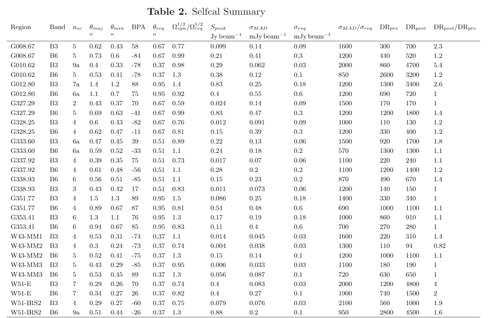
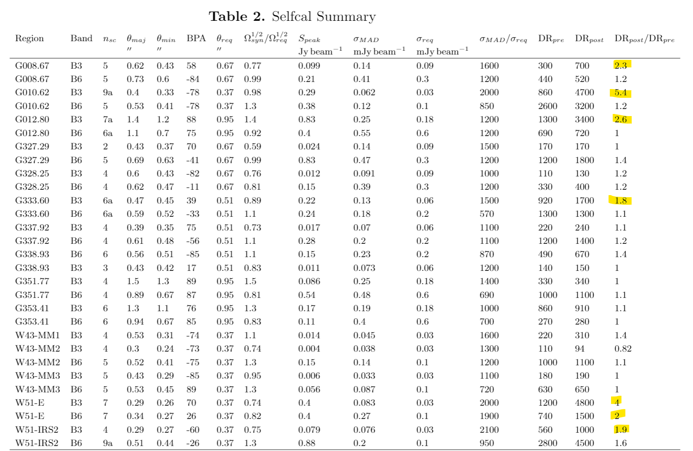
Continuum Selection>


α map: G008
α map: G10
α map: G12

α map: G327

α map: G328

α map: G333

α map: G337

α map: G338
α map: G351

α map: G353

α map: W43MM2

α map: W43MM3

α map: W51Ee2

α map: W51Ee8

α map: W51EIRS1

α map: W51IRS2

G10

G12

G327

G328

G333

G337

G338

G351

G353

W43MM2

W43MM3

W51-E

W51IRS2


G010.62 
G012.80 
G327.29 
G328.25 
G333.60 
G337.92 
G338.93 
G351.77 
G353.41 
W43-MM1 
W43-MM2 
W43-MM3 
W51-E 
W51-IRS2

G010.62

G012.80

G327.29

G328.25

G333.60

G337.92

G338.93

G351.77

G353.41

W43-MM1

W43-MM2

W43-MM3

W51-E

W51-IRS2

ALMA-IMF Early Results:
The CMF steepens with time?
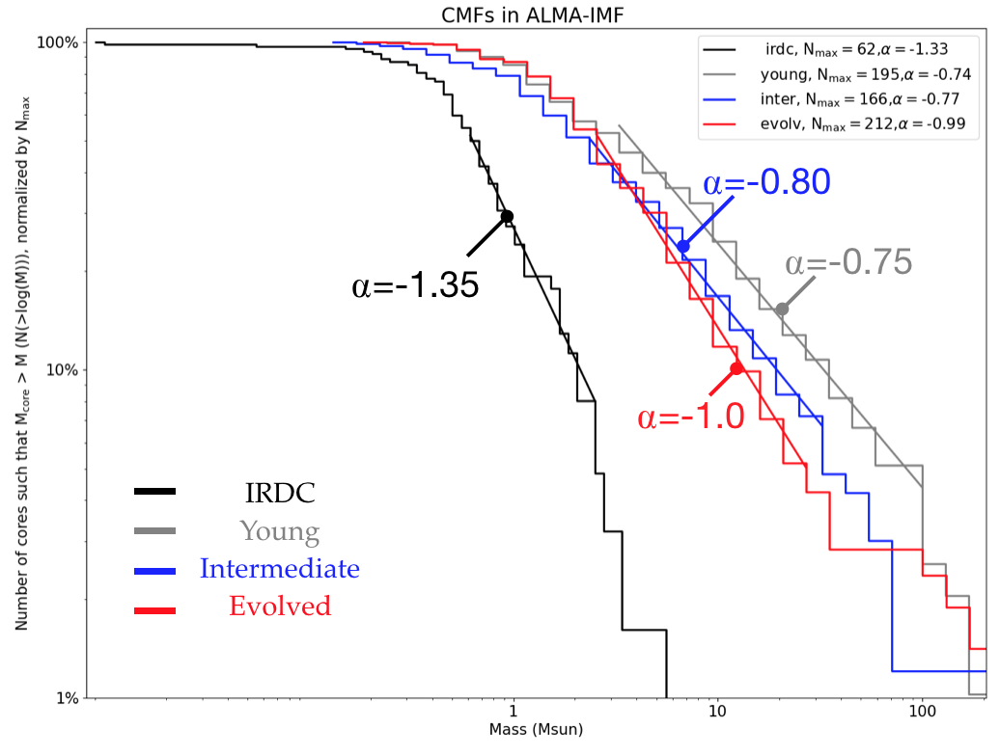
Louvet+, in prep
Self-Calibration (B3)
Self-Calibration (B6)
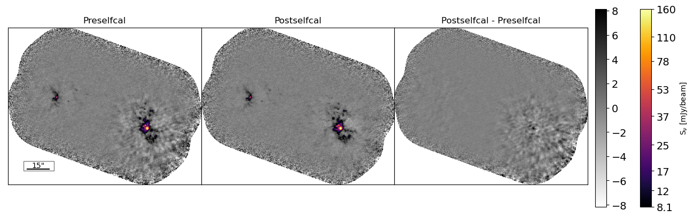BSENS vs CLEANEST (B6)
G008
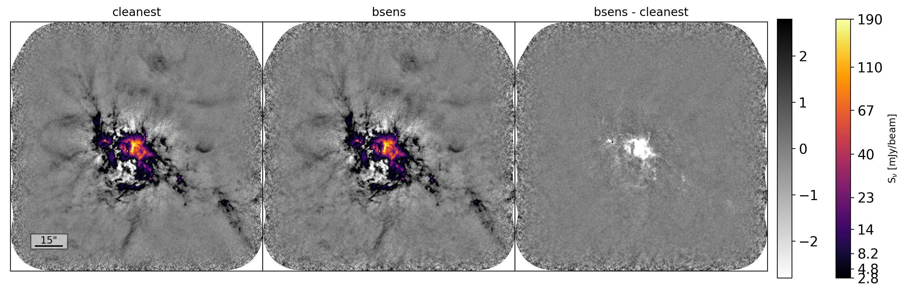
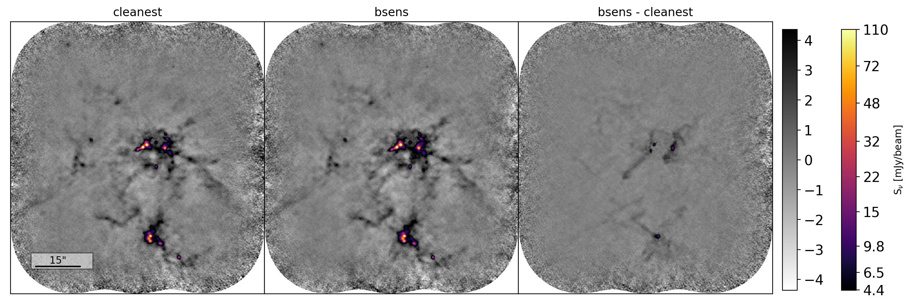
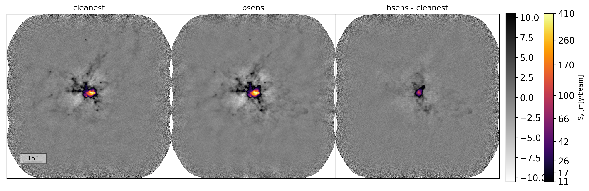
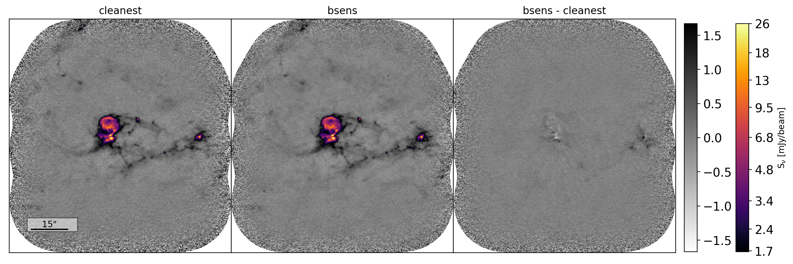
Spectral Index
We used α maps (& others) to assess ages of regions.On the Rayleigh-Jeans tail:
- Dust: α > 2 (β > 0 )
- Free-free: α ~ 0.1
- Synchrotron: α < 1
- Optically Thick: α = 2
(no mechanism implied!)
α map: G008
α map: G10
α map: G338
α map: W51IRS2
ALMA-IMF Initial Results
- Data Paper:
- High dynamic range images
- Careful treatment of continuum
- Millimeter spectral index maps
- Hundreds of cores measured in multiple cloud evolutionary stages
- Uniform beam and sensitivity
- First samples to include massive (M>10) cores
- Evolution of the CMF with region age
- High dynamic range images
- Careful treatment of continuum
- Millimeter spectral index maps
- Uniform beam and sensitivity
- First samples to include massive (M>10) cores
Flux histograms
: G008
Outset: Histogram of all data.
Inset: Zoom-in, with linear X-scale, near zero.
Inset, sub: histogram minus Gaussian model.
Inset: Zoom-in, with linear X-scale, near zero.
Inset, sub: histogram minus Gaussian model.
UV Histograms: Effective resolution, LAS
G008 B3
Continuum Selection
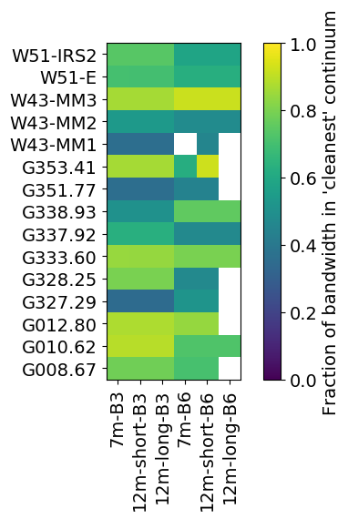
Histogram of spectral index
G008BSENS self-calibrated (B3)
BSENS vs CLEANEST (B3) - G008